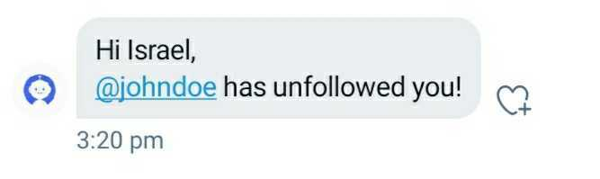

Home
Privacy Policy
Terms and condition
@FollowNotifyBot
helps you track your unfollowers and notify you when someone unfollows you

Connect your twitter account now to get started
We won't post anything on your behalf
Your account information is 100% confidential
Signup with twitter